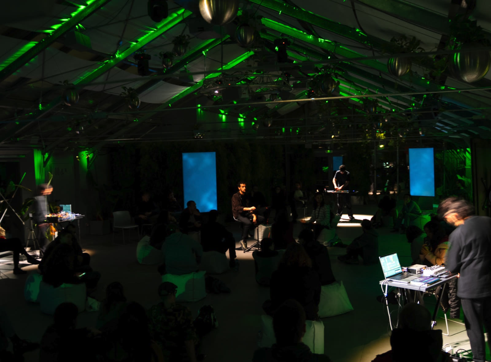
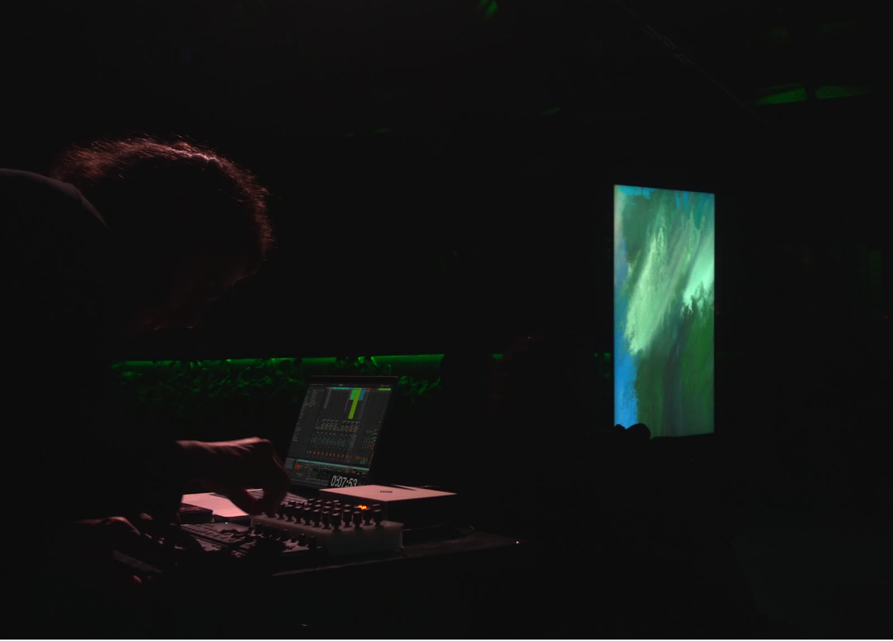
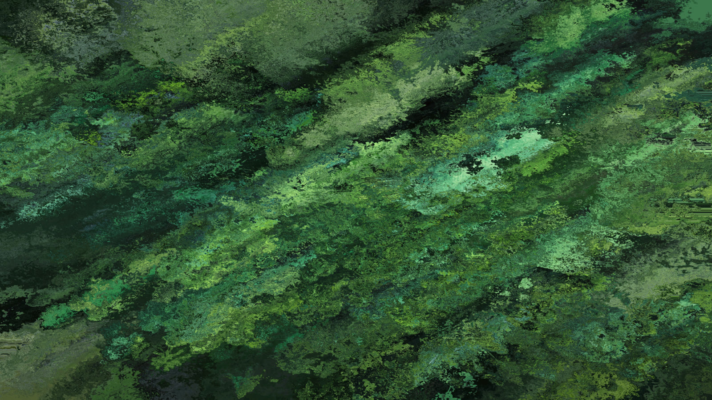
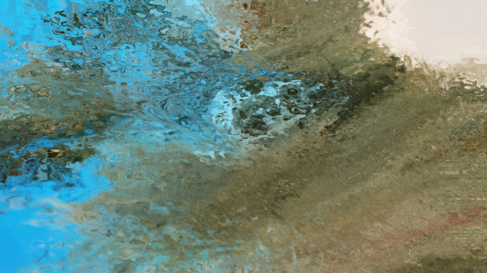

Rustle
Rustle è un'improvvisazione audiovisiva dal vivo che esplora la relazione fra suono, spazio e ambiente attraverso il concetto di ecosistemi sonori sviluppato da Minus Collettivo. Concepito come performance site-responsive, il lavoro si sviluppa nell'interazione continua fra performer, sistemi tecnologici e spazio circostante, trattando l'ambiente non come contenitore neutro ma come componente attiva del processo improvvisativo.
Attraverso un sistema di spazializzazione multicanale, suoni elettronici, voci e field recording generano un paesaggio sonoro immersivo e in costante evoluzione. La dimensione audiovisiva estende questa esperienza con un ambiente visivo che combina materiali pre-registrati ed elaborazione di dati in tempo reale, creando topografie mutevoli che reagiscono alle dinamiche della performance.
Più che presentare una composizione fissa, Rustle si sviluppa come un ecosistema emergente in cui eventi sonori e visivi si influenzano a vicenda attraverso processi di ascolto, adattamento e trasformazione. A partire dalla ricerca di Minus Collettivo sull'improvvisazione ambientale ed elettroacustica, il lavoro indaga come azione collettiva, percezione spaziale e mediazione tecnologica possano generare forme che nascono dalle relazioni più che da strutture predeterminate.



